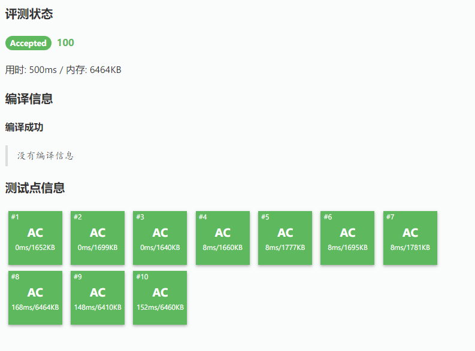
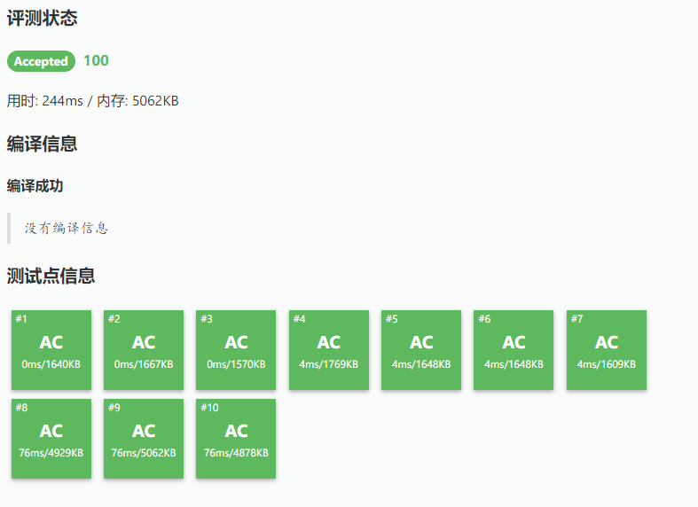
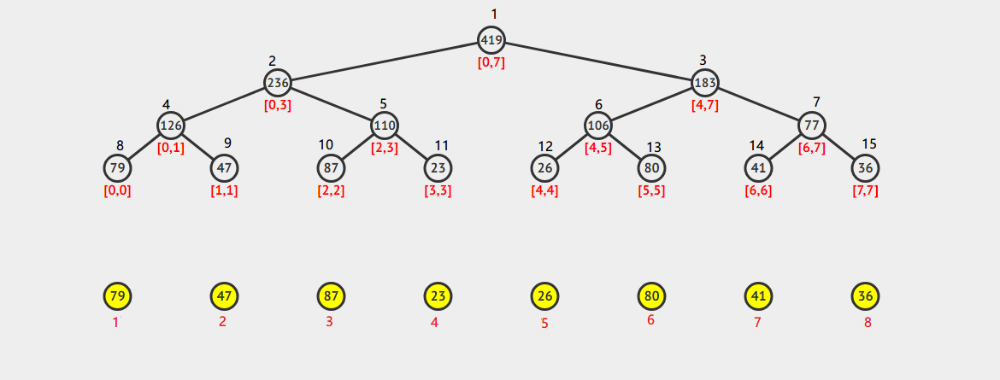
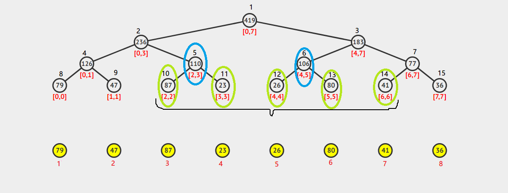
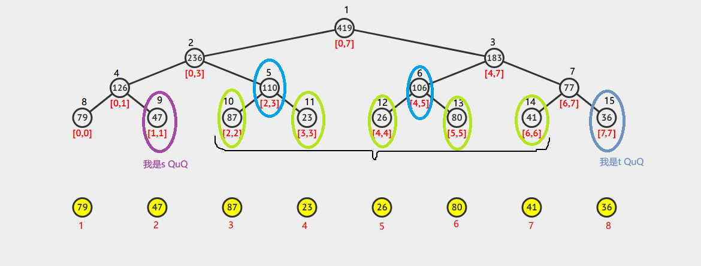
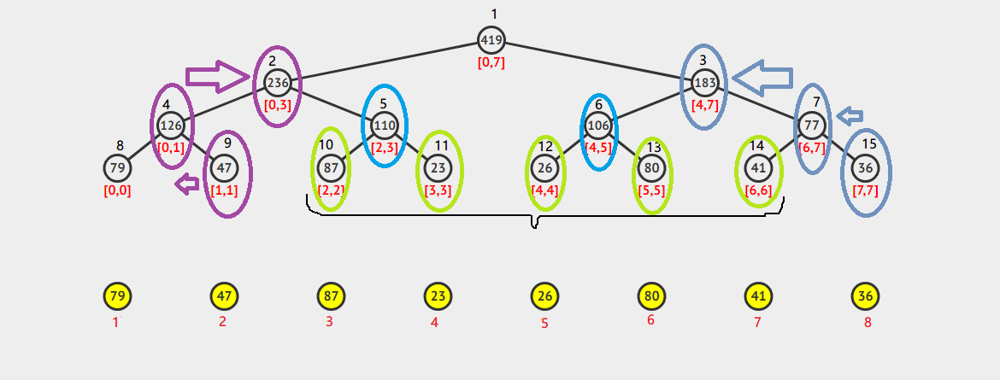
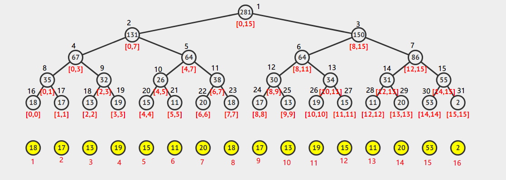
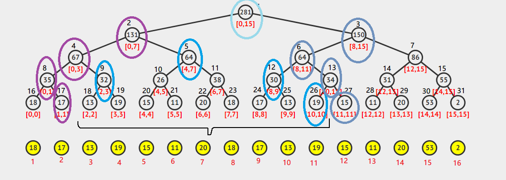

又叫堆式线段树, 是一种简单的常数优化
老文章, 可能有很多错误, 懒得修了
阅读本文前请先阅读:
本文主要是上面文章的延伸, 所以上文有讲的东西本文就不详细讲了QwQ
笔者的测试代码可能写丑了, 所以如果慢请自行卡常QwQ
这里还是以RSQ为例
简介
简单来说, zkw线段树就是非递归式线段树
众所周知, 普通线段树的常数很大, 经常被卡, 而zkw线段树的常数很小
这里用洛谷P3372做一个演示(更详细的补充见文末)
普通线段树R9389075

zkw线段树R9388963

前者运行时间是后者运行时间的2.05倍！Σ(°Д°;
详细测试见后文
其实zkw线段树不仅快, 而且码量小, 空间小, 好调试吊打普通线段树orz
而普通线段树的优点则是方便理解与学习, 并且适用范围更广(zkw线段树不能处理有运算优先级的问题, 如洛谷P3373)
实现
我们观察一下普通线段树的代码, 很容易就会发现:无论是建树、修改还是查询, 都是自顶向下的.
zkw线段树则正好反过来, 即自底向上
具体来说, 就是先把线段树填充成满二叉树(堆式存储), 之后就可以直接找到叶节点, 然后回溯上去了
听起来好像很简单QwQ
其实真的很简单QwQ
建树
首先是定义变量:
1 | const int MAXN = 2e5 + 5; |
我们以下图为例

(由visualgo生成. 为便于讲解, 笔者做了一些改动)
下面的黄圈是原数据, 黄圈下面的红色数字是原数组的下标
上面的树就是线段树了, 每一个节点内部都是节点下方标明的区间中所有元素的总和, 上边的黑色数字就是线段树的下标
visualgo生成的数组下标默认是从0开始的, 所以线段树下的区间和原数组有错位, 请注意区分(笔者懒得改了
通过观察, 我们发现一个规律:线段树对应叶子节点的下标和原数组的下标的差值是恒定的()
这个差值就是一个和N很接近的数了(N是叶子节点数)
实际上,
根据这一点, 我们可以这样建树:
1 |
|
大家可以和递归版线段树做一下对比
有细心的读者可能发现了:上例计算出的N是16而不是8!
还有, 原数组在线段树对应的为止整体向后平移了1位！
其实这都是为了方便查找
后面再详细解释
单点修改+区间查询&区间修改+区间查询
单点修改+区间查询
单点修改
实现很简单, 所以直接放代码
1 | void modify(int x, int k) { |
完了?Σ(°Д°;
完了！
单点查询更简单, 相信各位读者都能想到QwQ
单点修改下的区间查询
我们以查询[2,6]为例(线段树上的, 下同)

ans=[2,2]+[3,3]+[4,4]+[5,5]+[6,6]
观察上图可以发现, 因为在线段树上我们可以直接找到[2,3]和[4,5], 所以我们只需要用[2,3]代替[2,2]和[3,3]; 用[4,5]代替[4,4]和[5,5]
于是 ans=[2,3]+[4,5]+[6,6]
自顶向下求和很简单, 怎么实现自底向上的求和呢?
我们分别在区间左端点-1和右端点+1的位置放两个指针(令其为s,t), 就像这样:

接着不断将s,t移动到对应节点的父节点处, 直到s,t指向的节点的父节点相同时停止

在这期间, 如果:
-
s指向的节点是左儿子, 那么ans += 右儿子的值 -
t指向的节点是右儿子, 那么ans += 左儿子的值
如果不能理解就看看上图, 多看几遍就懂了QwQ
下面是代码
1 | il int query(int s, int t) { |
上面的那两个疑问现在可以解释了
仔细观察上述流程可以发现:我们只能查询[1,n-1]范围(这里还是线段树上标的)内的数据
如果我们想要查询[0,m]范围内()的呢?
将数组整体平移！
如果我们想要查询[m,n]范围内()的呢?
把N直接扩大2倍!
zkw:就是这么狠
到目前为止zkw线段树还是比较简短的
可能有人觉得这个和树状数组有点像, 这就对了
zkw:树状数组究竟是什么?就是省掉一半空间后的线段树加上中序遍历
orz
单点修改+区间查询完结, 整理一下代码:
1 | //单点修改+区间查询 |
区间修改+区间查询
区间修改
很显然, 我们不能用上面的方法暴力修改(还不如普通线段树)
其实堆式存储也可以自顶向下访问
就是上下各走一次而已
但是我们有更好的办法 zkw:使劲想想就知道了
这里我们采用标记永久化的思想(就是不下推lazy tag让他彻底lazy下去)
1 | int add[MAXN<<2]; //这个lazy tag表示当前节点已经更新完, 需要更新子节点 |
我们需要在自底向上时更新节点的值, 所以我们还需要一个变量记录该节点包含元素的个数
另外要注意修改某个节点的标记时要更新上面的值
举个例子；我们换一棵树

以修改[2,10]为例

当s到了[2,2]节点时, [3,3]节点的add加k, 那么接下来[2,3]、[0,3]节点的值都要加上k*1, 而到了[0,7]节点时, 因为[4,7]节点的add加了k, 所以[0,7]节点的值要加上k*(1+4)=k*5, 自然k要乘的系数又需要一个变量来记录
需要注意的是, 这次的修改要上推到根节点
下面是代码
1 | void update(int s, int t, int k) { |
区间查询
我们以查询[2,10]为例没错笔者我就是要用一张图
过程类似, 要注意s,t每次上推时都要根据当前所在节点的标记和lNum / rNum更新ans (ans += add[s]*lNum)
可能有些难懂, 多读两遍或者看看代码或者自己手推一下就好了QwQ
同样, 这个也需要上推到根节点
1 | il int query(int s, int t){ |
区间修改+区间查询告一段落, 整理一下代码:
1 | //区间修改+区间查询1 |
区间修改+区间查询的空间优化
也许有的读者发现了:标记和值好像可以看成一个东西
所以, 我们可不可以不存值, 只存标记?
当然可以！
zkw:永久化的标记就是值!
zkw:狗拿耗子, 猫下岗了
那么, 怎么实现呢?
下面是区间最值(RMQ)版本的(以最小值为例)
在这里, 我们不存总和了, 存
tree[i]=sum[i]-sum[i>>1] //sum[i]对应上述两个版本代码中的tree[i](即为子节点-父节点)区间修改就直接改
tree[i]查询就从当前节点一直加到根(
tree[i]+tree[i>>1]+...+tree[1])或者数学一点
(修改时的
s,t)遇到节点x, 则
A=min(tree[x>>1],tree[x>>1|1]), tree[x]+=A, tree[x>>1]-=A, tree[x>>1|1]-=A这一步可能有一些难懂, 就是修改了一个区间, 可能会导致父节点存储的最值(普通情况下)发生改变, 所以用这一步来修正
为什么笔者没有放区间求和(RSQ)版本的呢?
因为笔者觉得求和版本的依然要维护两棵树(一棵存tree[i]-tree[i-1], 另一棵存i*(tree[i]-tree[i-1]), 类似树状数组), 也就是没有优化(可能是笔者太弱了, 没有想到别的方法)
当然, 这个版本也是可以单点修改/单点查询的, 不过没有上述代码实用, 所以这里就不讨论了
直接放代码
1 | void build() { |
大数据测试
先来看一看参赛选手:
1号:递归线段树
2号:zkw线段树(非差分版本, 差分版本的常数略大, 就不测了)
3号:树状数组
zkw线段树:说好的我的主场呢?
先以洛谷P3372做一个热身
因为图太多, 所以不贴出来了, 有兴趣的读者可以查看提交记录
读入优化
1号:递归线段树 412ms / 6.31MB (R9424058)
2号:zkw线段树 208ms / 4.74MB (R9424567)
3号:树状数组 196ms / 3.71MB (R9424624)
读入优化+O2
1号:递归线段树 220ms / 6.21MB (R9424921)
2号:zkw线段树 160ms / 4.86MB (R9424805)
3号:树状数组 96ms / 3.74MB (R9424762)
可以看到, 没有O2时2号和3号相差无几, 有了O2之后3号吊打全场可能是笔者写的zkw线段树常数太大QwQ
为了防止zkw线段树被吊打得太惨反应算法真实水平以及模拟NOIp竞赛环境, 下面就不开O2了
在这里先放一下结果, 测试代码和大数据放在另一篇文章里
保证所有输入数据在unsigned long long 范围内, 结果对取模, 表格中的时间为平均值
测试环境:
系统:noilinux-1.4.1
内存:2GB
CPU:AMD Athlon™ II X4 631 Quad-Core Processor 2600 MHz
- 测试#1:
| 数据规模 | 递归线段树(ms) | zkw线段树(ms) | 树状数组(ms) |
|---|---|---|---|
| 5e5(5组) | 3554.359 | 2067.978 | 1968.074 |
| 1e6(5组) | 7327.344 | 4922.725 | 4359.272 |
| 5e6(3组) | 49416.196 | 34078.837 | 26782.107 |
| 1e7(3组) | 126192.820 | 74198.015 | 57485.430 |
- 测试#2:
| 数据规模 | 递归线段树(ms) | zkw线段树(ms) | 树状数组(ms) |
|---|---|---|---|
| 5e5(5组) | 3985.435 | 2085.221 | 1981.154 |
| 1e6(5组) | 6995.611 | 4268.988 | 3991.724 |
| 5e6(3组) | 45401.981 | 29582.957 | 25179.336 |
| 1e7(3组) | 99805.488 | 67543.985 | 54304.283 |
结论:不考虑有运算优先级的情况下, 树状数组吊打全场(zkw线段树哭晕在厕所
后记
这篇文章笔者写了将近一天整整三天
因为笔者是个蒟蒻, 所以这篇文章难免会有错误, 在此希望各位dalao批评的时候别把笔者喷得太惨QwQ
另外, zkw julao在他的ppt中还讲了许多高端操作, 有兴趣读者可以看一看膜拜orz
主要参考资料
-
统计的力量——线段树全接触
(膜拜zkw julao)